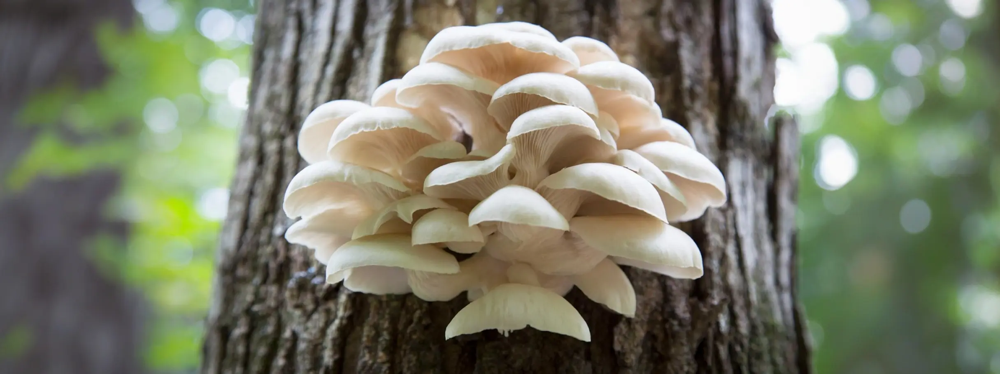

Грибы | Лес Angels Wings — самые лучшие леса для правильного поиска
Грибы | Лес Angels Wings — самые лучшие леса для правильного поискаСтатьи Грибы | Лес Angels Wings — самые лучшие леса для правильного поиска
 Angels Wings — самые лучшие леса
Angels Wings — самые лучшие леса
Грибы-крылышки ангела — это удивительные грибы с неоднозначной репутацией своей съедобности. В этой статье мы рассмотрим их классификацию, места обитания, методы распознавания, а также разъясним вопросы их съедобности
Грибы с крыльями ангела можно найти в умеренном поясе северного полушария, в хвойных лесах. Эти грибы получают питательные вещества из разложения мертвого органического материала, чаще всего хвойных деревьев.
Они произрастают от Японии через Евразию до Аляски и американского континента. Pleurocybella porrigens — научное название этих грибов — обычно обитает на гниющих бревнах в темных и влажных лесах.
Чтобы определить эти удивительные грибы, сначала следует найти скопления грибов, растущих на гниющих бревнах друг на друге. Эти грибы легко распознать по поразительно белым шляпкам цвета слоновой кости.
Чаще всего они имеют форму небольшой вазочки, вытягивающейся наружу по краю, напоминая крылышки. Обычно их размеры не превышают 10 сантиметров в диаметре, а мякоть шляпки заметно тонкая.
Чтобы определить эти удивительные грибы, сначала следует найти скопления грибов, растущих на гниющих бревнах друг на друге. Эти грибы легко распознать по поразительно белым шляпкам цвета слоновой кости.
Чаще всего они имеют форму небольшой вазочки, вытягивающейся наружу по краю, напоминая крылышки. Обычно их размеры не превышают 10 сантиметров в диаметре, а мякоть шляпки заметно тонкая.
Впервые крылышки ангела были описаны в путеводителях в 1805 году и использовались людьми без известных случаев отравления на протяжении веков. Однако в 2004 году в Японии произошло 59 серьезных заболеваний, связанных с употреблением этих грибов, включая смерть 17 человек и серьезные неврологические симптомы у других.
Интересно, что большинство пострадавших в 2004 году были пожилого возраста, в среднем 70 лет, и ранее имели проблемы с почками. Ученые предполагают, что заболевания почек могли сыграть важную роль в развитии отравления от грибов-крылышек ангела.
В 2010 году была обнаружена аминокислота плевроцибеллазиридин в этих грибах, которая, возможно, является причиной острой энцефалопатии у пострадавших. Также ученые полагают, что необычные погодные условия влияли на появление этих грибов с высокой токсичностью.
В настоящее время нет окончательного ответа на вопрос о безопасности употребления грибов-крылышек ангела. Многие руководства рекомендуют быть осторожными при сборе и употреблении этих грибов, особенно людям с заболеваниями почек.
Грибы-крылышки ангела (слева) можно спутать с обыкновенными вешенками (справа). Как отличить грибы друг от друга?
Во-первых, у вешенок цвет шляпки обычно не столь яркий, как у ангельских крылышек, скорее с беловато-серым или беловато-коричневым оттенком.
Другие статьи

Поделиться


 также
также
Эта серия имеет особенности, полезные
для походов или сбора грибов...

Узнайте, как вести себя в походе
безопасно для себя и природы...

Узнайте, где найти правильную одежду
для дождливой тихой охоты...